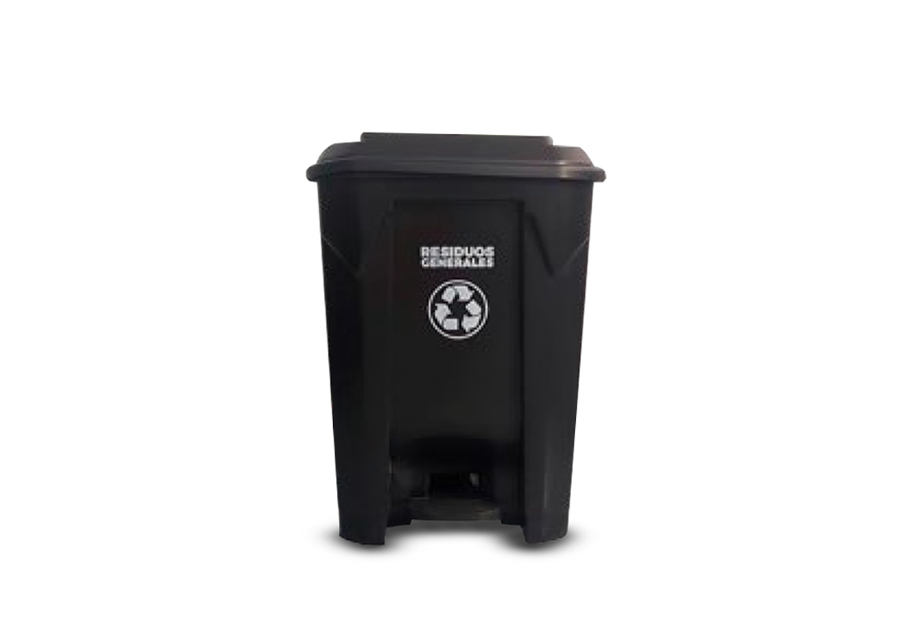
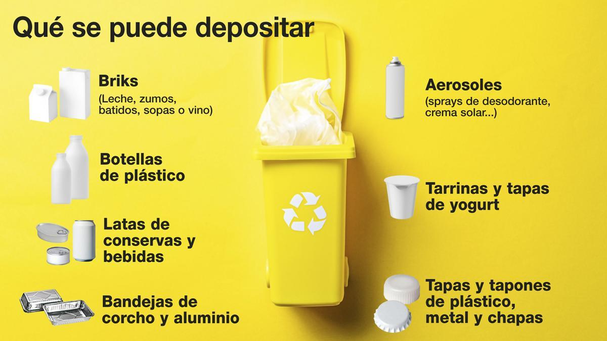
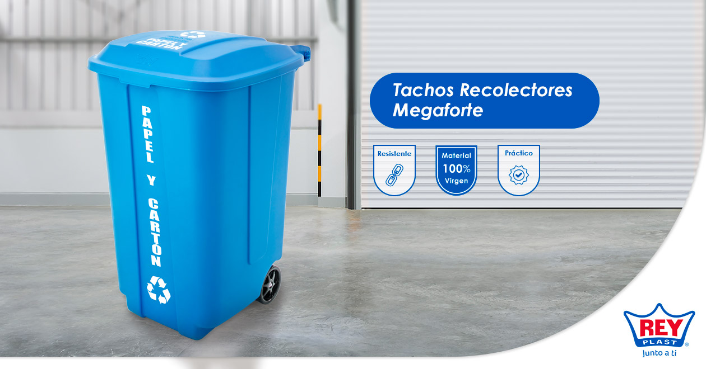
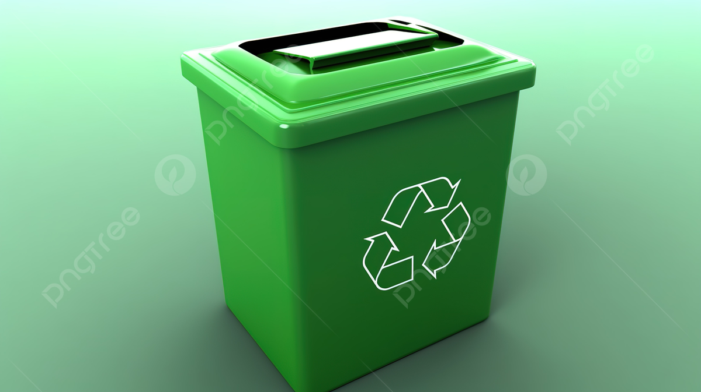

El contenedor negro sirve para depositar residuos no aprovechables como el papel higiénico; servilletas, papeles y cartones contaminados con comida; papeles metalizados, entre otros.

El contenedor AMARILLO está destinado a los envases de plástico, latas o envases tipo brik

En el contenedor azul hay que depositar solo papel y cajas de cartón: envases de alimentación, calzado, productos congelados, papel de envolver, papel de uso diario, etc

Qué debo depositar en el contenedor VERDE
Botellas y botes de vidrio (zumos, refrescos, vinos, licores, sidras, salsas, aceite, etc.). Tarros y frascos de vidrio (tanto de bebidas y alimentos en conserva, como de perfumes, colonias, etc.).
